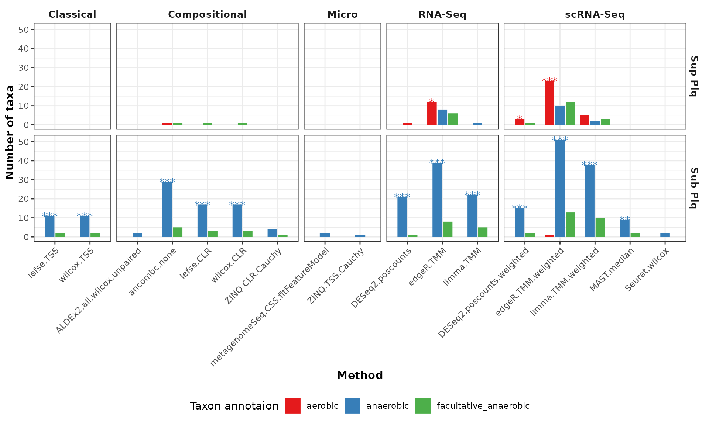
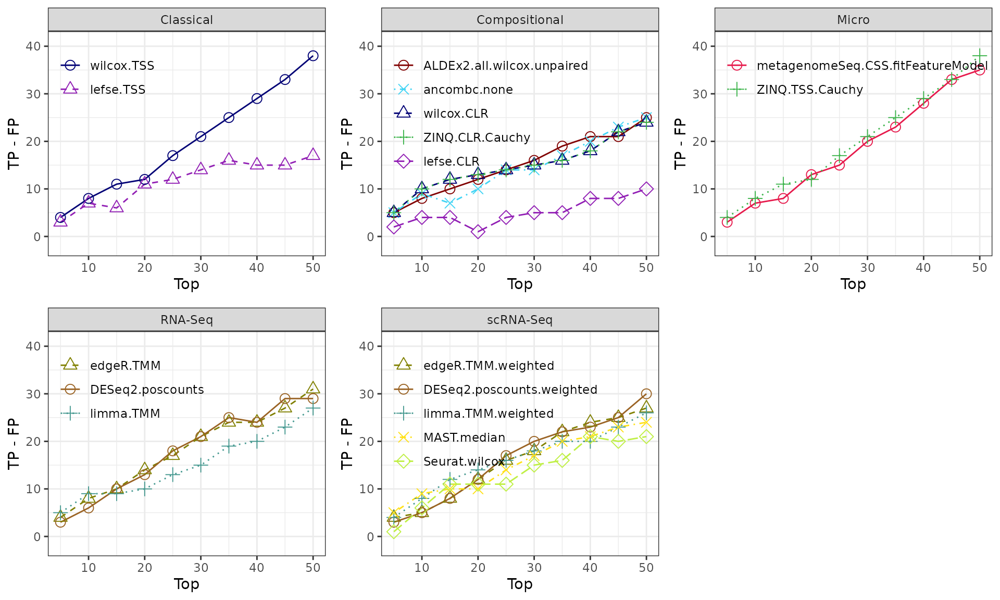

HMP_2012_16S_gingival_V35 - supgragingival vs sugingival plaque
Source:vignettes/articles/HMP_2012_16S_gingival_V35.Rmd
HMP_2012_16S_gingival_V35.Rmd
library(MicrobiomeBenchmarkDataAnalyses)
library(MicrobiomeBenchmarkData)
library(mia)
library(phyloseq)
library(magrittr)
library(benchdamic)
library(dplyr)
library(ggplot2)
library(gridExtra)Data
Import dataset:
dat_name <- 'HMP_2012_16S_gingival_V35'
conditions_col <- 'body_subsite'
conditions <- c(condB = 'subgingival_plaque', condA = 'supragingival_plaque')
tse <- getBenchmarkData(dat_name, dryrun = FALSE)[[1]]
tse
#> class: TreeSummarizedExperiment
#> dim: 17949 311
#> metadata(0):
#> assays(1): counts
#> rownames(17949): OTU_97.1 OTU_97.10 ... OTU_97.9991 OTU_97.9995
#> rowData names(7): superkingdom phylum ... genus taxon_annotation
#> colnames(311): 700103497 700106940 ... 700111586 700109119
#> colData names(15): dataset subject_id ... sequencing_method
#> variable_region_16s
#> reducedDimNames(0):
#> mainExpName: NULL
#> altExpNames(0):
#> rowLinks: a LinkDataFrame (17949 rows)
#> rowTree: 1 phylo tree(s) (45364 leaves)
#> colLinks: NULL
#> colTree: NULLFilter data
- Subjects from the same run center and the first visit.
col_data <- as.data.frame(colData(tse))
col_data_sub <-
dplyr::filter(col_data, run_center == 'WUGC', visit_number == 1)
col_data_split <- split(col_data_sub, factor(col_data_sub$body_subsite))
subjects <- intersect(
col_data_split$subgingival_plaque$subject_id,
col_data_split$supragingival_plaque$subject_id
)
male_subjects <- dplyr::filter(
col_data_sub,
subject_id %in% subjects, gender == 'male'
) %>%
dplyr::pull(subject_id) %>%
unique()
female_subjects <- dplyr::filter(
col_data_sub,
subject_id %in% subjects, gender == 'female'
) %>%
dplyr::pull(subject_id) %>%
unique()
n <- min(length(male_subjects), length(female_subjects))
set.seed(1234)
select_subjects <- c(sample(male_subjects, n), sample(female_subjects, n))
select_samples <- rownames(col_data_sub)[
col_data_sub$subject_id %in% select_subjects
]
tse_subset <- tse[,select_samples]
tse_subset <- filterTaxa(tse_subset)
colData(tse_subset)[[conditions_col]] <-
factor(colData(tse_subset)[[conditions_col]], levels = conditions)
tse_subset
#> class: TreeSummarizedExperiment
#> dim: 1487 96
#> metadata(0):
#> assays(1): counts
#> rownames(1487): OTU_97.10005 OTU_97.10006 ... OTU_97.9966 OTU_97.9991
#> rowData names(7): superkingdom phylum ... genus taxon_annotation
#> colnames(96): 700103497 700106940 ... 700024964 700103572
#> colData names(15): dataset subject_id ... sequencing_method
#> variable_region_16s
#> reducedDimNames(0):
#> mainExpName: NULL
#> altExpNames(0):
#> rowLinks: a LinkDataFrame (1487 rows)
#> rowTree: 1 phylo tree(s) (45364 leaves)
#> colLinks: NULL
#> colTree: NULLPrior information
OTU level:
row_data <- as.data.frame(rowData(tse_subset))
prior_info <- row_data[, c('genus', 'taxon_annotation')]
prior_info$taxon_name <- rownames(row_data)
prior_info$new_names <- paste0(prior_info$taxon_name, '|', prior_info$genus)
prior_info <-
dplyr::relocate(prior_info, taxon_name, new_names, genus, taxon_annotation)
head(prior_info)
#> taxon_name new_names genus
#> OTU_97.10005 OTU_97.10005 OTU_97.10005|Capnocytophaga Capnocytophaga
#> OTU_97.10006 OTU_97.10006 OTU_97.10006|Actinomyces Actinomyces
#> OTU_97.10081 OTU_97.10081 OTU_97.10081|NA <NA>
#> OTU_97.10128 OTU_97.10128 OTU_97.10128|Actinomyces Actinomyces
#> OTU_97.10155 OTU_97.10155 OTU_97.10155|Actinomyces Actinomyces
#> OTU_97.10169 OTU_97.10169 OTU_97.10169|Prevotella Prevotella
#> taxon_annotation
#> OTU_97.10005 facultative_anaerobic
#> OTU_97.10006 anaerobic
#> OTU_97.10081 <NA>
#> OTU_97.10128 anaerobic
#> OTU_97.10155 anaerobic
#> OTU_97.10169 anaerobicBenchmarking at the OTU level
Convert to phyloseq
ps <- makePhyloseqFromTreeSummarizedExperiment(tse_subset)
sample_data(ps)[[conditions_col]] <-
factor(sample_data(ps)[[conditions_col]], levels = conditions)
ps
#> phyloseq-class experiment-level object
#> otu_table() OTU Table: [ 1487 taxa and 96 samples ]
#> sample_data() Sample Data: [ 96 samples by 15 sample variables ]
#> tax_table() Taxonomy Table: [ 1487 taxa by 5 taxonomic ranks ]
#> phy_tree() Phylogenetic Tree: [ 1487 tips and 1470 internal nodes ]Enrichment analysis
Get direction
direction <- get_direction_cols(DA_output, conditions_col, conditions)Enrichment (FDR <= 0.1)
enrichment <- createEnrichment(
object = DA_output,
priorKnowledge = prior_info,
enrichmentCol = "taxon_annotation",
namesCol = "new_names",
slot = "pValMat", colName = "adjP", type = "pvalue",
direction = direction,
threshold_pvalue = 0.1,
threshold_logfc = 0,
top = NULL, # No top feature selected
alternative = "greater",
verbose = FALSE
)Plot enrichment
enrich_plot <- plot_enrichment(
enrichment = enrichment,
enrichment_col = "taxon_annotation",
levels_to_plot = c("aerobic", "anaerobic", "facultative_anaerobic"),
conditions = conditions
)
enrich_plot +
labs(y = "Number of OTUs")
Putative true positives - putative false positives
Calculate TP - FP ratio (no threshold)
positives <- createPositives(
object = DA_output,
priorKnowledge = prior_info,
enrichmentCol = "taxon_annotation", namesCol = "new_names",
slot = "pValMat", colName = "adjP", type = "pvalue",
direction = direction,
threshold_pvalue = 1,
threshold_logfc = 0,
top = seq.int(from = 0, to = 50, by = 5),
alternative = "greater",
verbose = FALSE,
TP = list(c("DOWN Abundant", "anaerobic"), c("UP Abundant", "aerobic")),
FP = list(c("DOWN Abundant", "aerobic"), c("UP Abundant", "anaerobic"))
) |>
left_join(get_meth_class(), by = 'method')Plot TP - FP
positive_plots <- plot_positives(positives)
grid.arrange(grobs = positive_plots, ncol = 3)
Session info
sessionInfo()
#> R version 4.2.1 (2022-06-23)
#> Platform: x86_64-pc-linux-gnu (64-bit)
#> Running under: Ubuntu 20.04.4 LTS
#>
#> Matrix products: default
#> BLAS: /usr/lib/x86_64-linux-gnu/blas/libblas.so.3.9.0
#> LAPACK: /usr/lib/x86_64-linux-gnu/lapack/liblapack.so.3.9.0
#>
#> locale:
#> [1] LC_CTYPE=en_US.UTF-8 LC_NUMERIC=C
#> [3] LC_TIME=en_US.UTF-8 LC_COLLATE=en_US.UTF-8
#> [5] LC_MONETARY=en_US.UTF-8 LC_MESSAGES=en_US.UTF-8
#> [7] LC_PAPER=en_US.UTF-8 LC_NAME=C
#> [9] LC_ADDRESS=C LC_TELEPHONE=C
#> [11] LC_MEASUREMENT=en_US.UTF-8 LC_IDENTIFICATION=C
#>
#> attached base packages:
#> [1] stats4 stats graphics grDevices utils datasets methods
#> [8] base
#>
#> other attached packages:
#> [1] gridExtra_2.3
#> [2] ggplot2_3.3.6
#> [3] dplyr_1.0.9
#> [4] benchdamic_1.3.1
#> [5] magrittr_2.0.3
#> [6] phyloseq_1.40.0
#> [7] mia_1.4.0
#> [8] MultiAssayExperiment_1.22.0
#> [9] MicrobiomeBenchmarkData_0.99.0
#> [10] TreeSummarizedExperiment_2.4.0
#> [11] Biostrings_2.64.0
#> [12] XVector_0.36.0
#> [13] SingleCellExperiment_1.18.0
#> [14] SummarizedExperiment_1.26.1
#> [15] Biobase_2.56.0
#> [16] GenomicRanges_1.48.0
#> [17] GenomeInfoDb_1.32.3
#> [18] IRanges_2.30.0
#> [19] S4Vectors_0.34.0
#> [20] BiocGenerics_0.42.0
#> [21] MatrixGenerics_1.8.1
#> [22] matrixStats_0.62.0
#> [23] MicrobiomeBenchmarkDataAnalyses_0.0.0.9000
#>
#> loaded via a namespace (and not attached):
#> [1] softImpute_1.4-1 pbapply_1.5-0
#> [3] lattice_0.20-45 vctrs_0.4.1
#> [5] expm_0.999-6 mgcv_1.8-40
#> [7] beanplot_1.3.1 blob_1.2.3
#> [9] survival_3.4-0 nloptr_2.0.3
#> [11] spatstat.data_2.2-0 later_1.3.0
#> [13] DBI_1.1.3 rappdirs_0.3.3
#> [15] uwot_0.1.11 jpeg_0.1-9
#> [17] zlibbioc_1.42.0 MatrixModels_0.5-0
#> [19] rgeos_0.5-9 htmlwidgets_1.5.4
#> [21] mvtnorm_1.1-3 future_1.27.0
#> [23] leiden_0.4.2 ANCOMBC_1.6.2
#> [25] parallel_4.2.1 scater_1.24.0
#> [27] irlba_2.3.5 illuminaio_0.38.0
#> [29] Rcpp_1.0.9 readr_2.1.2
#> [31] KernSmooth_2.23-20 promises_1.2.0.1
#> [33] DelayedArray_0.22.0 methylumi_2.42.0
#> [35] limma_3.52.2 vegan_2.6-2
#> [37] Hmisc_4.7-1 fs_1.5.2
#> [39] textshaping_0.3.6 digest_0.6.29
#> [41] png_0.1-7 nor1mix_1.3-0
#> [43] sctransform_0.3.3 cowplot_1.1.1
#> [45] nleqslv_3.3.3 glmnet_4.1-4
#> [47] pkgconfig_2.0.3 spatstat.random_2.2-0
#> [49] DelayedMatrixStats_1.18.0 ggbeeswarm_0.6.0
#> [51] iterators_1.0.14 reticulate_1.25
#> [53] ffpe_1.40.0 beeswarm_0.4.0
#> [55] modeltools_0.2-23 xfun_0.32
#> [57] bslib_0.4.0 zoo_1.8-10
#> [59] tidyselect_1.1.2 reshape2_1.4.4
#> [61] purrr_0.3.4 ica_1.0-3
#> [63] viridisLite_0.4.0 rtracklayer_1.56.1
#> [65] rlang_1.0.4 jquerylib_0.1.4
#> [67] glue_1.6.2 RColorBrewer_1.1-3
#> [69] RcppZiggurat_0.1.6 registry_0.5-1
#> [71] stringr_1.4.0 DESeq2_1.36.0
#> [73] labeling_0.4.2 SparseM_1.81
#> [75] httpuv_1.6.5 biomformat_1.24.0
#> [77] class_7.3-20 preprocessCore_1.58.0
#> [79] BiocNeighbors_1.14.0 TH.data_1.1-1
#> [81] Wrench_1.14.0 annotate_1.74.0
#> [83] jsonlite_1.8.0 bit_4.0.4
#> [85] mime_0.12 systemfonts_1.0.4
#> [87] gplots_3.1.3 Rsamtools_2.12.0
#> [89] Exact_3.1 zCompositions_1.4.0-1
#> [91] stringi_1.7.8 ROI_1.0-0
#> [93] spatstat.sparse_2.1-1 gsl_2.1-7.1
#> [95] rbibutils_2.2.9 scattermore_0.8
#> [97] Rdpack_2.4 yulab.utils_0.0.5
#> [99] quadprog_1.5-8 bitops_1.0-7
#> [101] cli_3.3.0 rhdf5filters_1.8.0
#> [103] ALDEx2_1.28.1 RSQLite_2.2.15
#> [105] tidyr_1.2.0 libcoin_1.0-9
#> [107] data.table_1.14.2 bumphunter_1.38.0
#> [109] energy_1.7-10 rstudioapi_0.13
#> [111] microbiome_1.18.0 GenomicAlignments_1.32.1
#> [113] sfsmisc_1.1-13 nlme_3.1-159
#> [115] locfit_1.5-9.6 listenv_0.8.0
#> [117] DECIPHER_2.24.0 miniUI_0.1.1.1
#> [119] NADA_1.6-1.1 dbplyr_2.2.1
#> [121] readxl_1.4.0 TTR_0.24.3
#> [123] lifecycle_1.0.1 cellranger_1.1.0
#> [125] munsell_0.5.0 caTools_1.18.2
#> [127] codetools_0.2-18 vipor_0.4.5
#> [129] lmtest_0.9-40 htmlTable_2.4.1
#> [131] xtable_1.8-4 ROCR_1.0-11
#> [133] BiocManager_1.30.18 abind_1.4-5
#> [135] farver_2.1.1 parallelly_1.32.1
#> [137] RANN_2.6.1 askpass_1.1
#> [139] SeuratObject_4.1.0 BiocIO_1.6.0
#> [141] GEOquery_2.64.2 RcppAnnoy_0.0.19
#> [143] goftest_1.2-3 patchwork_1.1.1
#> [145] tibble_3.1.8 ggdendro_0.1.23
#> [147] cluster_2.1.3 future.apply_1.9.0
#> [149] Seurat_4.1.1 Matrix_1.4-1
#> [151] tidytree_0.4.0 ellipsis_0.3.2
#> [153] prettyunits_1.1.1 metagenomeSeq_1.38.0
#> [155] ggridges_0.5.3 mclust_5.4.10
#> [157] igraph_1.3.4 multtest_2.52.0
#> [159] minfi_1.42.0 slam_0.1-50
#> [161] spatstat.utils_2.3-1 htmltools_0.5.3
#> [163] BiocFileCache_2.4.0 yaml_2.3.5
#> [165] GenomicFeatures_1.48.3 utf8_1.2.2
#> [167] plotly_4.10.0 XML_3.99-0.10
#> [169] pkgdown_2.0.6 e1071_1.7-11
#> [171] foreign_0.8-82 withr_2.5.0
#> [173] scuttle_1.6.2 fitdistrplus_1.1-8
#> [175] BiocParallel_1.30.3 bit64_4.0.5
#> [177] rngtools_1.5.2 doRNG_1.8.2
#> [179] rootSolve_1.8.2.3 trust_0.1-8
#> [181] affyio_1.66.0 multcomp_1.4-20
#> [183] foreach_1.5.2 spatstat.core_2.4-4
#> [185] progressr_0.10.1 ragg_1.2.2
#> [187] rsvd_1.0.5 ScaledMatrix_1.4.0
#> [189] memoise_2.0.1 evaluate_0.16
#> [191] VGAM_1.1-7 forcats_0.5.1
#> [193] geneplotter_1.74.0 tzdb_0.3.0
#> [195] permute_0.9-7 lmom_2.9
#> [197] curl_4.3.2 fansi_1.0.3
#> [199] highr_0.9 xts_0.12.1
#> [201] ZINQ_1.0 tensor_1.5
#> [203] edgeR_3.38.4 checkmate_2.1.0
#> [205] cachem_1.0.6 desc_1.4.1
#> [207] truncnorm_1.0-8 interp_1.1-3
#> [209] detectseparation_0.2 deldir_1.0-6
#> [211] corncob_0.2.0 rjson_0.2.21
#> [213] ggrepel_0.9.1 lumi_2.48.0
#> [215] ade4_1.7-19 rprojroot_2.0.3
#> [217] tools_4.2.1 sass_0.4.2
#> [219] sandwich_3.0-2 RCurl_1.98-1.8
#> [221] proxy_0.4-27 ape_5.6-2
#> [223] xml2_1.3.3 ROI.plugin.lpsolve_1.0-1
#> [225] httr_1.4.3 assertthat_0.2.1
#> [227] rmarkdown_2.14 boot_1.3-28
#> [229] globals_0.16.0 R6_2.5.1
#> [231] Rhdf5lib_1.18.2 nnet_7.3-17
#> [233] DirichletMultinomial_1.38.0 progress_1.2.2
#> [235] genefilter_1.78.0 KEGGREST_1.36.3
#> [237] treeio_1.20.1 gtools_3.9.3
#> [239] shape_1.4.6 coin_1.4-2
#> [241] beachmat_2.12.0 HDF5Array_1.24.2
#> [243] BiocSingular_1.12.0 rhdf5_2.40.0
#> [245] splines_4.2.1 colorspace_2.0-3
#> [247] generics_0.1.3 base64enc_0.1-3
#> [249] pillar_1.8.0 affy_1.74.0
#> [251] sp_1.5-0 GenomeInfoDbData_1.2.8
#> [253] plyr_1.8.7 gtable_0.3.0
#> [255] restfulr_0.0.15 lpSolveAPI_5.5.2.0-17.8
#> [257] latticeExtra_0.6-30 knitr_1.39
#> [259] biomaRt_2.52.0 fastmap_1.1.0
#> [261] doParallel_1.0.17 quantreg_5.94
#> [263] AnnotationDbi_1.58.0 Rfast_2.0.6
#> [265] backports_1.4.1 openssl_2.0.2
#> [267] scales_1.2.0 filelock_1.0.2
#> [269] base64_2.0 decontam_1.16.0
#> [271] gld_2.6.5 hms_1.1.1
#> [273] scrime_1.3.5 Rtsne_0.16
#> [275] shiny_1.7.2 MGLM_0.2.1
#> [277] polyclip_1.10-0 grid_4.2.1
#> [279] numDeriv_2016.8-1.1 siggenes_1.70.0
#> [281] DescTools_0.99.45 lazyeval_0.2.2
#> [283] Formula_1.2-4 crayon_1.5.1
#> [285] MASS_7.3-58.1 MAST_1.22.0
#> [287] sparseMatrixStats_1.8.0 viridis_0.6.2
#> [289] reshape_0.8.9 rpart_4.1.16
#> [291] compiler_4.2.1 spatstat.geom_2.4-0
#> [293] zinbwave_1.18.0